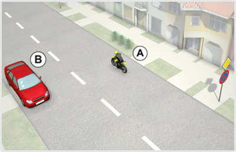

- 162. Milyen okból szabad megállni a jelzőtáblát követően? #703443
- Forgalmi vagy műszaki okból.
- Csak műszaki okból.
- Csak forgalmi okból.
- 163. A jelzőtáblát követően szabad-e megállni a járdán kétkerekű motorkerékpárral? #703444
- Igen, az előírt feltételek fennállása esetén.
- Nem.
- Csak akkor, ha közúti jelzés ezt lehetővé teszi.

- 164. A jelzőtáblát követően szabad-e várakozni a járdán kétkerekű motorkerékpárral? #703447
- Igen, az előírt feltételek fennállása esetén.
- Csak akkor, ha közúti jelzés ezt lehetővé teszi.
- Nem.

- 165. Mit jelent ez a közúti jelzés? #703448
- A várakozás ellenőrző óra vagy jegykiadó automata működtetésével engedélyezett.
- A várakozás csak ellenőrző óra működtetésével engedélyezett.
- A várakozás csak jegykiadó automata működtetésével engedélyezett.

- 166. Szabad-e gépjárművel várakozni 12:00 órakor a jelzőtáblát követő 20 m-en belül? #703449
- Igen, ha a járművezető a járműnél marad, és áruszállító jármű érkezésekor a rakodóhelyet haladéktalanul szabaddá teszi.
- Nem.
- Igen, feltétel nélkül.

- 167. Mit jelent ez a közúti jelzés? #703450
- A szabálytalanul várakozó járművet elszállíthatják.
- Műszaki hibás járművek várakozóhelyét jelzi.
- A szabálytalanul megálló járművet elszállíthatják.

- 168. Mit jelent ez a közúti jelzés? #703452
- Az úttesten kívül az útpadkán is tilos a megállás és a várakozás.
- Az úttesten kívül a leállósávon is tilos a megállás és a várakozás.
- Az útpadkán és a leállósávon tilos a megállás és a várakozás.
- 169. Az út mely részére vonatkozik a jelzőtáblával jelzett tilalom? #703453
- Az úttestre.
- Az úttestre és az útpadkára.
- Az úttestre és a járdára.
- 170. Az út mely részére vonatkozik a jelzőtáblával jelzett tilalom? #703454
- Az úttestre.
- Az úttestre és az útpadkára.
- Az úttestre és a járdára.
- 171. A jelzőtáblát követően, forgalmi vagy műszaki okot ide nem értve, szabad-e megállni motorkerékpárral? #703455
- Nem.
- Igen, de csak a kétkerekű motorkerékpárral.
- Igen.
- 172. Az ábrán látható jelzőtábla hatálya a következő útkereszteződésig tart, kivéve, ha... #703613
- a jelzőtábla alatt elhelyezett kiegészítő tábla ennél rövidebb távolságot jelöl meg.
- útburkolati jelből más következik.
- a megállás szabályaiból más következik.
- 173. Az ábrán látható jelzőtábla hatálya a következő útkereszteződésig tart, kivéve, ha... #703614
- ellentétes értelmű jelzőtábla a tilalmat előbb feloldja.
- útburkolati jelből más következik.
- a megállás szabályaiból más következik.
- 174. Kétkerekű segédmotoros kerékpárral szabad-e megállni a járdán e jelzőtáblát követően? #703615
- Igen, amennyiben fennállnak a segédmotoros kerékpárral járdán való megállással kapcsolatos egyéb feltételek.
- Nem.
- Csak akkor, ha közúti jelzés ezt lehetővé teszi.
- 175. Kétkerekű segédmotoros kerékpárral szabad-e várakozni a járdán e jelzőtáblát követően? #703616
- Igen, amennyiben fennállnak a segédmotoros kerékpárral járdán való várakozással kapcsolatos egyéb feltételek.
- Nem.
- Csak akkor, ha közúti jelzés ezt lehetővé teszi.
- 176. Mit tilt az ábrán látható jelzőtábla? #703617
- A megállást és a várakozást.
- Csak a megállást.
- Csak a várakozást.
- 177. Mit tilt az ábrán látható jelzőtábla? #703618
- A várakozást.
- A megállást és a várakozást.
- A megállást.
- 178. Szabad-e segédmotoros kerékpárral az úttesten megállni e jelzőtáblát követően? #703619
- Nem.
- Igen, az egy nyomon haladó segédmotoros kerékpárral.
- Igen.
- 179. Szabad-e segédmotoros kerékpárral az úttesten várakozni e jelzőtáblát követően? #703620
- Nem.
- Igen, az egy nyomon haladó segédmotoros kerékpárral.
- Igen.

- 180. Ön az ’A’ jelű motorkerékpárral a képen látható helyen megállt. Mikor szabályos ez? #722321
- Ha a megállásra műszaki hiba miatt került sor.
- Ha a jármű utasa itt szeretne leszállni.
- Ha az ábrán látható házban lakik, és az erről szóló igazolást elhelyezi a szélvédője mögé.
- 181. Szabályosan tartózkodik-e egyhelyben az ábrán látható ’A’ jelű motorkerékpár? #722322
- Nem.
- Igen, de csak 5 perc időtartamig.
- Igen, de csak akkor, ha utasa le szeretne szállni.
- 182. Az ábrán látható helyen őrizetlenül hagyhatja-e járművét az ’A’ jelű motorkerékpár vezetője? #722323
- Nem.
- Igen, mert az úttesten nincs záróvonal felfestve.
- Igen, de maximum 5 percig.